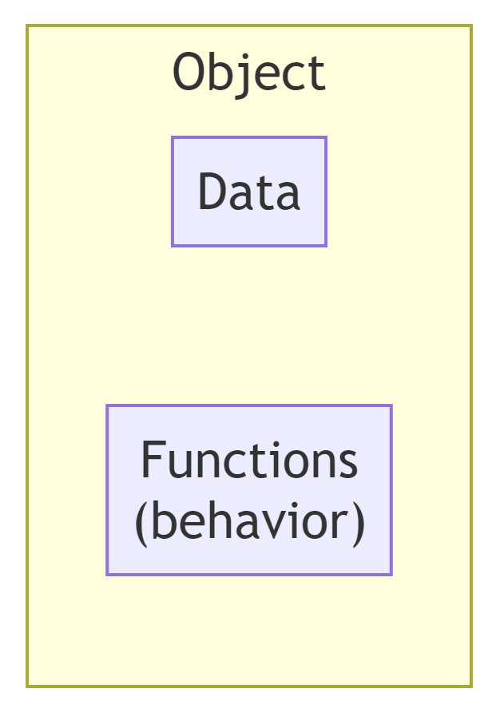

s = "hello world"Classes and object-oriented programming in Python
Introduction
It is often stated that in Python everything is an object. This is easy said, but it may not be clear for everyone what that exactly means. What is an object? What is a class? And how to these concepts relate? In this lesson you will learn what objects and classes in Python are and why it is important to know about object-oriented programming for data analysis.
What you will learn
- What an object in Python is
- What a class is and how objects and classes relate to each other
- Why classes and object-oriented programming are relevant
- How classes relate to each other
- How to write classes
- What built-in properties classes have in Python
- Why dataclasses are a useful type of classes
- When to use classes in your own code
Object-oriented programming: objects and classes
Everything is an object
In Python, an object groups related data and functions in a single unit.

Since, everything is an object in Python, the string "hello world" should also be an object.
It is obvious what the data part of the object s is: the sequence of characters hello world.
The behavior part of s neither comes as a great surprise because it is well known that you can operate on strings in several ways using the .-notation:
s.capitalize()
# 'Hello world'
s.upper()
# 'HELLO WORLD'
s.replace('world', 'everyone')
# 'hello everyone'So the object s bundles a sequence of characters and a set of functions that operate on sequences of characters.
The term ‘object’ corresponds fairly well with how we interpret the term in daily live. In daily practice, objects are things you can manipulate. The same goes for objects in Python.
Object-oriented programming
The concept of objects and their manipulation is at the core of the Python language because it is an object-oriented programming language. Object-orientation makes it possible to realize three important design principles in computer programs:
- Encapsulation. Regulate access to the data within an object and prevent unnecessary arbitrary access.
- Inheritance. Allow the transfer of properties from object types to more specialized object types.
- Polymorphism. The same operation has a different meaning for different object types.
Apart from inheritance, we won’t dive into the details of these concepts here.
Classes define objects
Objects may differ in what data they can store as well as in their behavior. The structure and behavior of an object is governed by its class. Hence, a class is often called the blueprint of an object. Along the same line, an object is called an instance of a class.
The type function reveals the class of an object (i.e. its type). The terms class and type can more or less be used interchangeably.
type(s)
# str
x = 2.718281828459045
type(x)
# FloatFor floating point numbers other operations are relevant than for strings. While upper() and capitalize() functions make sense for a string object, they are not relevant for a floating point number. On the other hand, the as_integer_ratio() function, which shows how a floating point number (with has finite precision) can be represented as the ratio of two integer numbers, makes only sense for floating point numbers.
To find out what attributes (i.e. which data and functions are defined for its class) an object has, you can use the dir() function. This will return a list of all attributes of an object.
type(s)
# str
dir(s)
# ['__add__',
# '__class__',
#
# ...
#
# 'title',
# 'translate',
# 'upper',
# 'zfill']
type(x)
# float
dir(x)
# ['__abs__',
# '__add__',
#
# ...
#
# 'hex',
# 'imag',
# 'is_integer',
# 'real']The function attributes of a class are called methods. However, apart from their membership of the class (and a special argument), they work like any other function.
How to write classes
What makes object-oriented programming languages so powerful is that you can define your own classes.
If, for example, you work with graphical or geographical data, it might come in handy to be able to manipulate points and coordinates. Let’s define our own Coordinates class.
class Coordinates:
"""A rectangular coordinate pair in a flat plane.""" # The class's doc string.
def __init__(self, x, y):
self.x = x
self.y = yNote that this is only the blueprint (the design) of the class. We will take a closer look at the exact meaning of the code below. If we execute the code nothing seems to happen.
We can create an object (i.e. an instance) of our newly created class:
c = Coordinates(10, 15)
d = Coordinates(1, 2)The objects c and d are instances of our Coordinates class. We instantiate objects of a certain class by calling the class name as if it were a function.
Objects of our class can be treated like any other object:
type(c)
# __main__.Coordinates
dir(c)
# ['__class__',
# '__delattr__',
# '__dict__',
#
# ...
#
# '__subclasshook__',
# '__weakref__',
# 'x',
# 'y']Note that in addition to our attributes x and y (the actual coordinates), our class obtained a lot more attributes, most of which start and end with __. We’ll talk about these later.
A closer look at the class definition
Let’s take a closer look at our class definition. After the headline class Coordinate:, we can define one or more methods at the next indentation level. In this case, we defined a single method with a special name __init__().
Almost every class defines an __init__() method. The __init__() method is called when a new object of a class is instantiated. So when we instantiated object c:
c = Coordinates(10, 15)this was (more or less) translated to:
c = Coordinates.__init__(..., 10, 15) # For now, ignore the ...This is more or less the case because we ignored the argument with the peculiar name self. Every method of a class (except class and static methods we will talk about later) is assumed to have at least one argument and this argument represents the instance of the class (i.e. the object). This argument is almost always given the name self.
The self argument gives us access to the object attributes, i.e. its variables and methods. Because it represents an object we use the .-notation for that. For example self.x and self.y give us access to the object attributes x and y regardless of ‘where we are in the class’.
This also holds for methods. If our class would have defined another method special_coordinate_operation(), we could have referred to it from within the class by self.special_coordinate_operation().
Note that self is an internal name. It is only used within the class. Outside it we use the object name. So within the methods of object c we use self.x to refer to c.x and self.y to refer to c.y.
Now that we understand the role of the self argument, we are able to understand the definition of the __init__-method:
def __init__(self, x, y):
self.x = x
self.y = yThis method expects the self parameter (which is automatically replaced with the object instance) and two additional parameters (the \(x\) and the \(y\) coordinate). Thus, when we created object c with c = Coordinates(10, 15), the following happened:
- A new object instance
cof theCoordinatesclass was created - The method
c.__init__(10, 15)was run
Note that the argument self disappeared and that the .-notation was used instead.
Adding behavior
Our class groups the \(x\) and \(y\) coordinates of a point in a single variable and we can refer to them using the .-notation and the object name:
c = Coordinates(10, 15)
print(f'Our point is located at ({c.x}, {c.y})')
# Our point is located at (10, 15)
# Move to the right:
c.x = c.x + 5
print(f'Now our point moved to ({c.x}, {c.y})')
# Now our point moved to (15, 15)Though nice this is of limited use because we haven’t defined any behavior in our class yet. We could have accomplished the same using a tuple or a dictionary:
# A tuple:
(10, 15) # Convention: (x, y)
# A dictionary:
c = { 'x': 10, 'y': 15 }Let’s say that we have a special requirement and we want to able to do some basic transformations on the coordinates: we want to mirror them easily in the \(x\) and \(y\) axis.
We can define our own methods to accomplish this:
class Coordinates:
"""A rectangular coordinate pair in a flat plane."""
def __init__(self, x, y):
self.x = x
self.y = y
def mirror_in_x(self):
self.y = -self.y # No change in x coordinate
def mirror_in_y(self):
self.x = -self.x # No change in y coordinateNow, we have defined behavior in our class that we can use on its objects:
c = Coordinates(10, 15)
c.mirror_in_x()
print(f'Now c is mirrored in the x axis: ({c.x}, {c.y})')
# Now c is mirrored in the x axis: (10, -15)
c.mirror_in_y()
print(f'Now c is mirror in the y axis as well: ({c.x}, {c.y})')
# Now c is mirrored in the y axis as wel: (-10, -15)‘Dunder’ methods
As you may have noticed from the output of the dir() statements, each class contains a number of attributes enclosed by double underscores (e.g. __le__). These so-called ‘dunder’ attributes define default behavior that you can override. We will focus on the dunder methods here.
These dunder methods provide very powerful and elegant functionality. Many of these methods are called under the hood when you issue a built-in function.
For example, on a list object, the built-in len() function calls the list.__len__() method under the hood. In the same way, the str() function calls the __str__() method of an object.
Thus, if we define dunder methods in our class, Python calls these methods when we issue built-in functions on our object.
In our Coordinates class, we could add a __abs__() method that calculates the vector length of our coordinates (with respect to the origin) using the Pythagorean theorem. We could also add a ‘str()’ method that provides a nice string presentation of our coordinates.
import math
class Coordinates:
def __init__(self):
...
def __abs__(self):
"""Return the vector length of the coordinate pair with respect to the origin"""
return math.sqrt(self.x**2 + self.y**2)
def __str__(self):
return print(f'({self.x:.3f}, {self.y:.3f})')
c = Coordinates(10, 15)
abs(c)
# 18.027756377319946
str(c)
# (10.000, 15.000)There are many more dunder methods we can use. The real power shines when we define our own arithmetics. We could define the add and sub methods that are called when we use the + and - operators:
import math
class Coordinates:
def __init__(self):
...
def __abs__(self):
...
def __str__(self):
...
def __add__(self, other_coordinate):
x = self.x + other_coordinate.x
y = self.y + other_coordinate.y
return Coordinates(x, y) # Return a new Coordinates object
def __sub__(self, other_coordinate):
x = self.x - other_coordinate.x
y = self.y - other_coordinate.y
return Coordinates(x, y)With these added to our class, we can use Coordinate objects as follows:
a = Coordinates(5, 3)
b = Coordinates(2, 1)
c = a + b
print(c)
# (7.000, 4.0000)
d = a - b
print(d)
# (3.000, 2.000)The same holds for other arithmetic operators, binary operators (e.g. <, &) and augmented arithmetic assignments (e.g. +=). By defining these in your own classes, you can create very powerful objects and write operations on them very concisely and intuitively.
More information on the dunder methods you can define (or, formally more correct: override), you can find in the Python documentation.
Relationship between classes
One of the reasons why object-oriented programming has been so pervasive and successful in programming for such a long time, is that you can relate classes to each other. Especially, the concept of inheritance is very powerful. It enables classes to inherit attributes from each other.
Suppose that, in addition to our Coordinates class, we want to define another class Shape that defines geometric shapes.
We could do that as follows:
class Shape:
shape_type = 'Shape'
def __init__(self, anchor_point: Coordinates, color: str):
self.anchor_point = anchor_point
self.color = color
def move(self, new_position: Coordinates):
"""Set the anchor point of the shape to a new position"""
self.anchor_point = new_position
def change_color(self, new_color: str):
"""Change the color of the shape"""
self.color = new_colorNote the variable shape_type. It is a class variable (instead of an instance). All objects of this class refer to the same value.
This class is fairly general. It may not be very practical in daily use. Perhaps we want to be a bit more concrete and use a rectangle object in our code. A rectangle has a width and a height. Let’s assume that the upper left corner of our rectangle is our anchor point.
Using class inheritance we can inherit the properties of Shape in a new class Rectangle.
class Rectangle(Shape): # Note the reference to Shape
shape_type = 'Rectangle'
def __init__(self, anchor_point: Coordinates, color: str, width: float, height: float):
super().__init__(anchor_point, color)
self.width = width
self.height = height
def area(self):
return self.width * self.heightWe use the super() function to access attributes of the parent class (Shape in this case).
Now, let’s instantiate some objects of these classes and to look at their properties.
shape_anchor = Coordinates(5, 4)
s = Shape(anchor_point=shape_anchor, color='white')
print(s.shape_type)
# Shape
print(s.anchor_point)
# (5.000, 4.000)
s.move(Coordinates(6, 6))
print(s.anchor_point)
# (6.000, 6.000)
rectangle_anchor = Coordinates(3, 10)
r = Rectangle(rectangle_anchor, width=5, height=8)
print(s.shape_type)
# RectangleThese results should not come as a surprise. What, however, may be surprising is that we can move the rectangle using the move attribute although we didn’t define it (explicitly).
r.move(Coordinates(4, 2))
print(r.anchor_point)
# (4.000, 2.000)We are able to use the move attribute because the Rectangle class is a subclass of the Shape class and automatically inherited all properties of Shape.
dir(r)
# ['__class__',
# '__delattr__',
#
# ...
#
# 'anchor_point',
# 'area',
# 'change_color',
# 'color',
# 'height',
# 'move',
# 'shape_type',
# 'width']We can extend this further by also subclassing the Rectangle class. Let’s say we want to have a Square class, which is obviously a special type of rectangle.
class Square(Rectangle):
def __init__(self, width, color):
super().__init__(width=width, height=width, color=color) # Call the Rectangle.__init__So, now our Square class inherits all properties of Rectangles as well as all properties of Shape.
In addition to inheriting properties, all subclasses can serve as full representatives of their superclasses. So if your code needs expects a shape class at a certain point, you may as well insert a Square-object. This is an example of what is called polymorphism.
The encapsulation, inheritance and polymorphism principles make object-oriented programming a very powerful paradigm. It enables a lot of abstraction and re-use of functionality.
The pedigree of classes
In Python, all classes descend from either the object or the Exception class. That’s why you will find a log of attributes you didn’t define yourself when you define a new class.
As we have already seen, you can use the built-in type() function to see of what class a certain object is. However, this will only return its class name. It doesn’t tell anything about its ascendents. Because of polymorphism you sometimes need to check whether a class descends from a certain class.
If, for example, we obtain a Square-object, we might want to know whether it can serve as a Shape. We can use the isinstance() function for that.
isinstance(r, Shape)
# TrueThis explains why we can sometimes replace a Boolean expression with an object. Somewhere in the pedigree of such classes, they descend from the bool class.
Note that bool itself is a subclass of int:
a = bool()
type(a)
# bool
isinstance(a, int)
# TrueData classes
Dataclasses are a special type of classes that were introduced fairly recently in Python. They make it easy to write simple classes to store data without having to write a lot of additional (overhead) code.
The dataclass is part of the dataclasses package and you use it with the @dataclass decorator (a decorator uses the @ notation).
The following example is taking from the Python documentation:
from dataclasses import dataclass
@dataclass
class InventoryItem:
"""Class for keeping track of an item in inventory."""
name: str
unit_price: float
quantity_on_hand: int = 0
def total_cost(self) -> float:
return self.unit_price * self.quantity_on_handNote that no (explicit) __init__()-method is needed.
Especially for data analysis projects, data classes may come in as a handy tool to define simple data structures.
Using classes in your own code
When do you use classes in your own code?
There is no short and easy answer to the question as to when you should use classes in your code. It is obviously a matter of taste and preference.
A few hints that may help to decide whether or not:
Consider using classes if you have:
- Logical units. If you are able to discriminate logical units, entities, concepts or objects in your (business) problem and it would make life easier if you are able to manipulate these.
- Repeated function arguments. It can be an important signal if you repeat the same function arguments over and over again. It may make life easier if you group these functions into a class and make the data available within it.
- When you have to. For some libraries it is required to use classes. For example, some packages require that you define your model in a class.
- Custom exceptions. These types of classes are trivial to define but they may make your code much more robust. Refer to the Python documentation to learn more about
Exceptionclasses.
In some programming languages, it is very common to always use classes. In Java, for example, it is even required. In Python, it is certainly not a must. Often, just a ‘bag of functions’ is sufficient.
However, if used properly, classes may provide very useful functionality and a lot of power to your code.